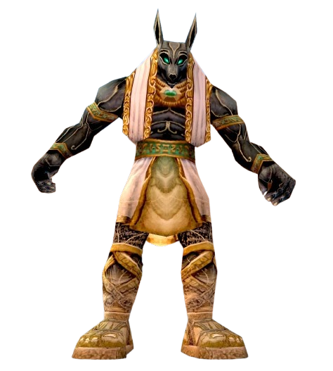
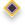
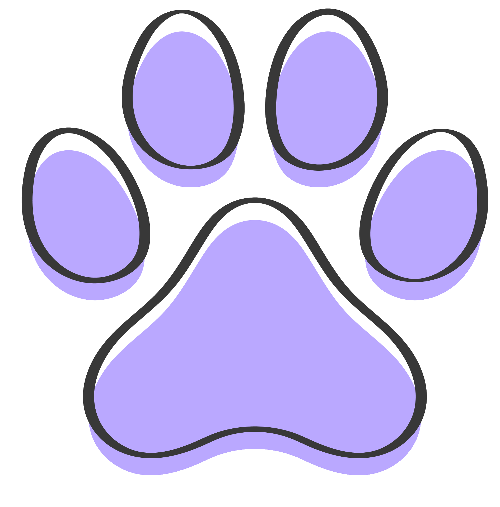
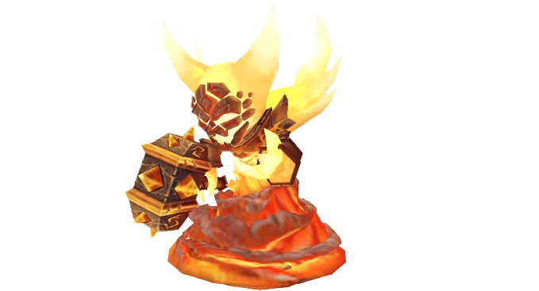

WoW
Maestro Pokewow
Kyoku
LA GUIA DEFINITIVA DE COLECCION PARA MASCOTAS DE WoW.
Ejemplo Guía de Pets


Esta página tendrá una guía completa sobre cómo obtener esta mascota.
A la izquierda estará el mapa con la ubicación de la pet, npc relevante, misión asociada o ubicación de raid.
A la derecha estará la información relevante sobre la pet, como su origen, expansión, tipo de mascota, rareza, etc.

2009
Total de Mascotas Actual
89
Mascotas de Logros
EXPLORAR MASCOTAS DESTACADAS

Gurrumino Zandalari
Origen: Batalla
Expansión: BFA

Val'kyr nonata
Origen: Batalla
Expansión: WotLK
Idolo de Anubisath
Origen: Raid
Expansión: Cataclysm

Mini Ragnaros
Origen: Tienda
Expansión: Cataclysm